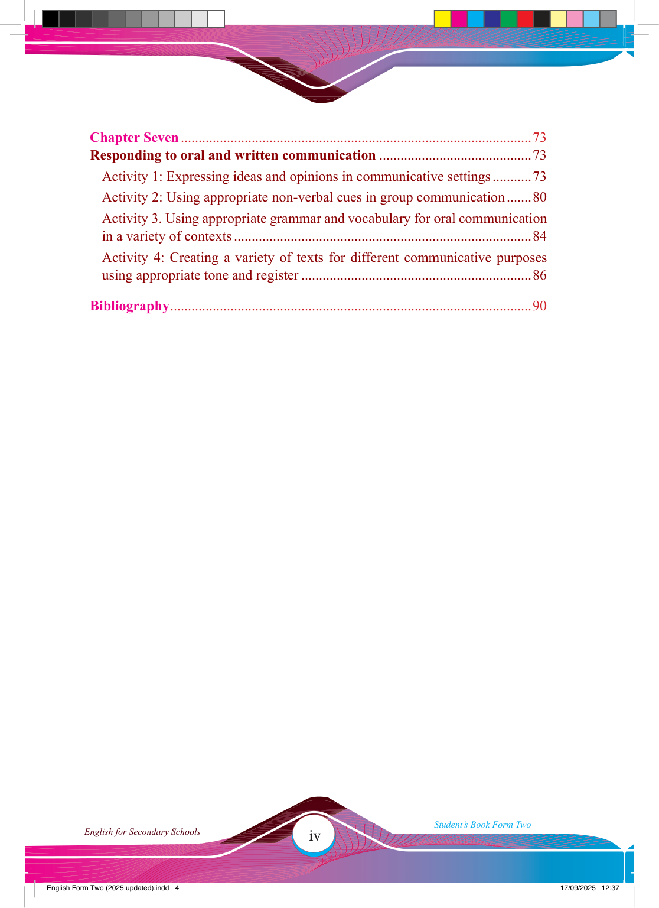

iv
Student’s Book Form Two
English for Secondary Schools
Responding to oral and written communication ...........................................73
Activity 1: Expressing ideas and opinions in communicative settings ...........73
Activity 2: Using appropriate non-verbal cues in group communication .......80
Activity 3. Using appropriate grammar and vocabulary for oral communication in a variety of contexts ....................................................................................84
Activity 4: Creating a variety of texts for different communicative purposes using appropriate tone and register .................................................................86
17/09/2025 12:37
Chapter Seven ...................................................................................................73
Bibliography......................................................................................................90